PAPER QUALITY / 2026.10.15
图要清楚。
结论要有依据。
从保存的实验数据重新绘制。训练泛化差距、共同失败与候选退步完整保留；没有新训练、仿真或论文正文。
36张重新生成的图
600 dpiPNG + 矢量 PDF / SVG
19,012条导出测量与统计值
主线仍为v5；v11开发235/240未采用。独立起点数与执行次数分开报告。图注、误差区间与版本边界随图提供。
完整图注与旧新映射 · 图表索引CSV · 下载图表与提纲包 · 下一步整改计划
图片可点击放大。插入论文时优先PDF或SVG；PNG按原宽使用。36张是完整资料集，不要求全部放正文。
F01 / 正文
延迟一致的世界模型候选选择
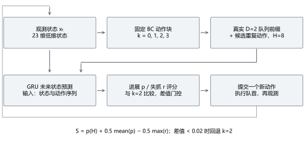
PNG · PDF · SVG · CSV
结构示意：世界模型确认配置，23维状态含物体真值，D=2，H=8，K=4。r监督失抓，不是通用失败概率。每次仅提交一个动作。
此图不含后续规则恢复，也不证明性能。
测量来源与数据
common.pyevaluate_delay.pyreproduction/confirmation_20261012_01/design.jsonworld_model.py
0条导出值；来源SHA见PLOT_SOURCES.json。
F02a / 正文
固定集总损失：训练与开发集
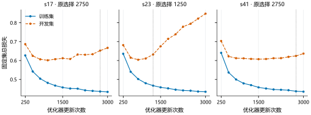
PNG · PDF · SVG · CSV
36个既存权重的固定数据集评估；每种子12个采样点（250至3000，每250更新一次），未平滑。训练160组/20父轨迹，开发64组/8父轨迹。竖点线为原选择权重，未重新选点。固定集总损失；不是批次损失或闭环成功率。
总损失、全状态MSE与平均欧氏位置误差不同；真实泛化差距保留。
测量来源与数据
figures/figure_data.jsonreproduction/figures_deepcheck_20261014_01/checkpoint_metrics.csvreproduction/figures_deepcheck_20261014_01/diagnostics.json
72条导出值；来源SHA见PLOT_SOURCES.json。
F02b / 正文
归一化状态 MSE：训练与开发集
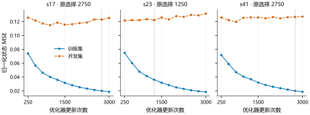
PNG · PDF · SVG · CSV
36个既存权重的固定数据集评估；每种子12个采样点（250至3000，每250更新一次），未平滑。训练160组/20父轨迹，开发64组/8父轨迹。竖点线为原选择权重，未重新选点。归一化状态 MSE；不是批次损失或闭环成功率。
总损失、全状态MSE与平均欧氏位置误差不同；真实泛化差距保留。
测量来源与数据
figures/figure_data.jsonreproduction/figures_deepcheck_20261014_01/checkpoint_metrics.csvreproduction/figures_deepcheck_20261014_01/diagnostics.json
72条导出值；来源SHA见PLOT_SOURCES.json。
F02c / 正文
物体位置平均欧氏误差（mm）：训练与开发集
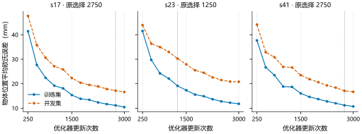
PNG · PDF · SVG · CSV
36个既存权重的固定数据集评估；每种子12个采样点（250至3000，每250更新一次），未平滑。训练160组/20父轨迹，开发64组/8父轨迹。竖点线为原选择权重，未重新选点。物体位置平均欧氏误差（mm）；不是批次损失或闭环成功率。
总损失、全状态MSE与平均欧氏位置误差不同；真实泛化差距保留。
测量来源与数据
figures/figure_data.jsonreproduction/figures_deepcheck_20261014_01/checkpoint_metrics.csvreproduction/figures_deepcheck_20261014_01/diagnostics.json
72条导出值；来源SHA见PLOT_SOURCES.json。
A01 / 附录
原始批次训练日志
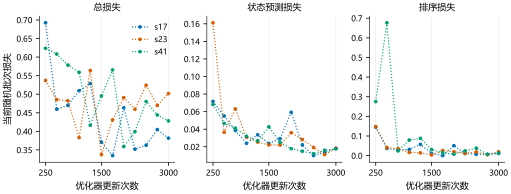
PNG · PDF · SVG · CSV
每250次更新采样当前随机批次，每种子12个点。虚线仅连接已记录点；不是每步连续轨迹或全训练集平均。
稀疏、不同批次与多损失项会造成折线抖动；不插值、不平滑。
测量来源与数据
108条导出值；来源SHA见PLOT_SOURCES.json。
F03 / 附录
离散候选选择造成的 regret 跳变
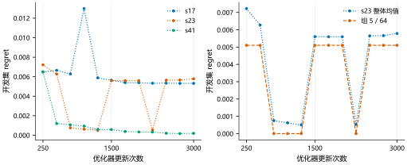
PNG · PDF · SVG · CSV
64组来自8父轨迹。regret为同组最优真实短期分数减所选候选的真实分数。s23在1500步，组5贡献约0.005103/整体0.005604≈91%。点线仅连接12个权重评估点。
不是每步连续测量或闭环成功率；39个有效候选对不足以支持稳定泛化。
测量来源与数据
reproduction/figures_deepcheck_20261014_01/diagnostics.json
60条导出值；来源SHA见PLOT_SOURCES.json。
F04 / 正文
开发集公平消融
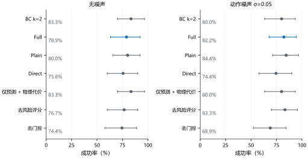
PNG · PDF · SVG · CSV
每条件30个共同起点；BC固定权重，其余方法三个训练种子。点为均值，线为原分析20000次起点/种子交叉bootstrap的95%区间。成功率轴严格0–100%。
开发集不可称独立确认；方法差异看配对差值区间，不能用种子SD替代抽样CI。
测量来源与数据
reproduction/multiseed_20261012_01/analysis/summary.csv
14条导出值；来源SHA见PLOT_SOURCES.json。
F05 / 正文
原世界模型独立确认
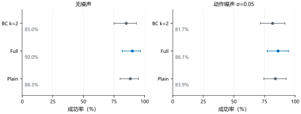
PNG · PDF · SVG · CSV
每条件60个共同起点；BC固定权重，其余方法三个训练种子。点为均值，线为原分析20000次起点/种子交叉bootstrap的95%区间。成功率轴严格0–100%。
原确认不含共享恢复；三个种子共享同批起点；方法差异看配对差值区间，不能用种子SD替代抽样CI。
测量来源与数据
reproduction/confirmation_20261012_01/analysis/summary.csv
6条导出值；来源SHA见PLOT_SOURCES.json。
F06 / 附录
相同起点的配对结果 · clean
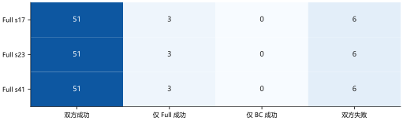
PNG · PDF · SVG · CSV
每行60个相同起点，三行共享起点与固定BC k=2。计数相同不表示权重或动作相同；三行不是180个独立起点。
测量来源与数据
12条导出值；来源SHA见PLOT_SOURCES.json。
F07 / 附录
相同起点的配对结果 · noise005
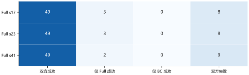
PNG · PDF · SVG · CSV
每行60个相同起点，三行共享起点与固定BC k=2。计数相同不表示权重或动作相同；三行不是180个独立起点。
测量来源与数据
12条导出值；来源SHA见PLOT_SOURCES.json。
F08 / 附录
双方成功交集的完成步数差
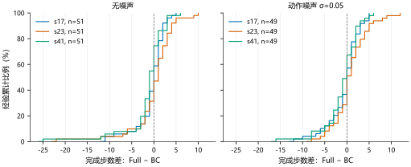
PNG · PDF · SVG · CSV
负值表示Full更快；阶梯是整数步数的经验分布，不是画图错误。包含全部长尾：clean每种子51个共同成功，noise每种子49个。
成功交集条件分析，不能代表全体起点效率，不能把失败400步当真实完成时间。
测量来源与数据
386条导出值；来源SHA见PLOT_SOURCES.json。
F09 / 正文
位置 RMSE 与持续性弱基线
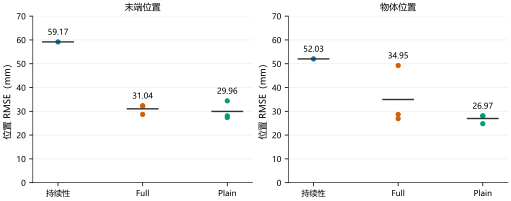
PNG · PDF · SVG · CSV
64开发分支组/8父轨迹，K=4，H=8。点为各训练种子，横杠为均值；持续性为单个无参数预测器。数值与旧F19相同，合并为一张。
RMSE不等于平均欧氏误差。已用于选点的开发数据，不是独立测试。
测量来源与数据
reproduction/extensions_20261012_01/offline_metrics.json
14条导出值；来源SHA见PLOT_SOURCES.json。
F10 / 正文
原世界模型确认的配对差值
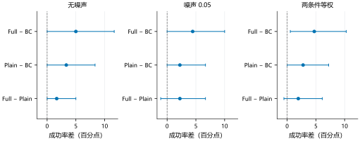
PNG · PDF · SVG · CSV
60个共同起点，BC固定，Full/Plain各3种子。95%起点/种子交叉bootstrap区间。联合Full−BC为+4.72[0.56,10.28]百分点；Full−Plain为+1.94[−0.56,6.11]。
排序相对Plain的区间跨零；联合条件仍共享60起点。
测量来源与数据
reproduction/confirmation_20261012_01/analysis/paired_comparisons.csv
9条导出值；来源SHA见PLOT_SOURCES.json。
F11 / 正文
持续性与真值短期评分候选对照
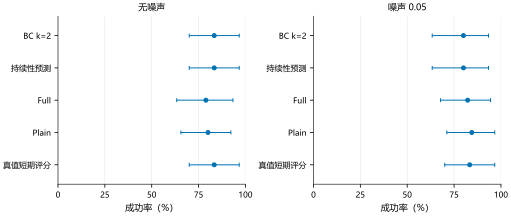
PNG · PDF · SVG · CSV
30个共同开发起点。Full/Plain为3个冻结权重均值，其他策略每条件一次；95%配对bootstrap区间。真值候选使用特权无噪声短期反事实、H=8与相同门控。
oracle是局部短期评分诊断，不是任务成功上界；并不保证长期最佳。
测量来源与数据
reproduction/extensions_20261012_01/analysis/summary.json
10条导出值；来源SHA见PLOT_SOURCES.json。
F12a / 正文
预测时域配置敏感性
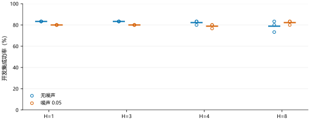
PNG · PDF · SVG · CSV
空心点为各冻结种子，短横线为均值；每条件30开发起点，成功率轴0–100%。离散配置不连折线。H包含D=2 FIFO前缀；H=1尚不能看到新提交动作。K=8同时扩展到训练外索引。
K改变了候选内容，不能解释为纯数量因果效应；没有在确认集选配置。
测量来源与数据
reproduction/extensions_20261012_01/analysis/summary.json
32条导出值；来源SHA见PLOT_SOURCES.json。
F12b / 正文
候选集合配置敏感性
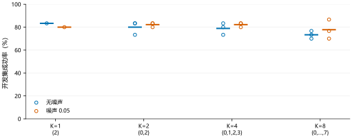
PNG · PDF · SVG · CSV
空心点为各冻结种子，短横线为均值；每条件30开发起点，成功率轴0–100%。离散配置不连折线。H包含D=2 FIFO前缀；H=1尚不能看到新提交动作。K=8同时扩展到训练外索引。
K改变了候选内容，不能解释为纯数量因果效应；没有在确认集选配置。
测量来源与数据
reproduction/extensions_20261012_01/analysis/summary.json
28条导出值；来源SHA见PLOT_SOURCES.json。
F13 / 附录
不同预测步的位置误差
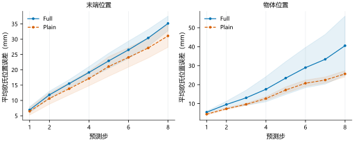
PNG · PDF · SVG · CSV
64个已知开发组/8父轨迹。线为三个训练种子的均值，阴影为种子样本SD（ddof=1），不是95%CI。横轴是真实预测步。评分头续训control/calibrated的动力学与Full逐值完全一致，合并显示Full线，未删除不同结果。
此指标是平均欧氏距离，不是F09的RMSE。重叠的相同预测不构成三份独立证据。
测量来源与数据
reproduction/multiseed_20261012_01/offline/prediction_horizons.csv
128条导出值；来源SHA见PLOT_SOURCES.json。
F14 / 正文
共享恢复的独立确认
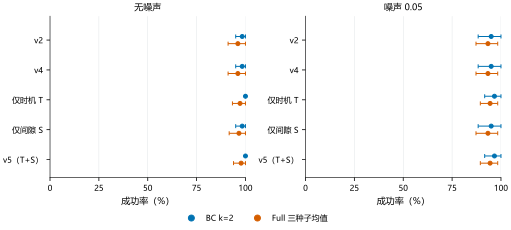
PNG · PDF · SVG · CSV
60个共同起点；每版本每起点8个执行条件，Full固定3种子。点/线为成功率和按起点重采样95%区间。v5原生确认464/480，不能当480个独立样本。
与原无恢复世界模型确认是不同批次；不能直接相减估计恢复效应。
测量来源与数据
reproduction/recovery_v5_20261012_01/analysis_confirmation/summary.json
20条导出值；来源SHA见PLOT_SOURCES.json。
A02 / 附录
共享恢复的开发对照
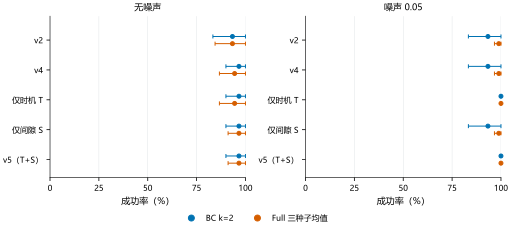
PNG · PDF · SVG · CSV
30个已知开发起点，每版本240次执行；v5与后续v6均236/240。起点bootstrap，不能写成独立确认。
与原无恢复世界模型确认是不同批次；不能直接相减估计恢复效应。
测量来源与数据
reproduction/recovery_v5_20261012_01/analysis_dev_a/summary.json
20条导出值；来源SHA见PLOT_SOURCES.json。
F15a / 正文
v5 起点配对效应与模块对照
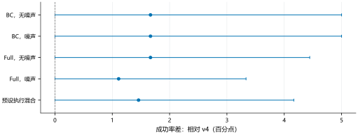
PNG · PDF · SVG · CSV
同60起点，20000次起点bootstrap、逐项95%区间。原预设执行混合v5−v4=+1.46[0,4.17]百分点：7次执行改善仅来自2个起点；三个训练种子固定。
区间未多重比较校正，包含零不能称显著普遍优势；无v5同批关闭恢复组。
测量来源与数据
reproduction/recovery_v5_20261012_01/analysis_confirmation/summary.json
5条导出值；来源SHA见PLOT_SOURCES.json。
F15b / 正文
v5 起点配对效应与模块对照
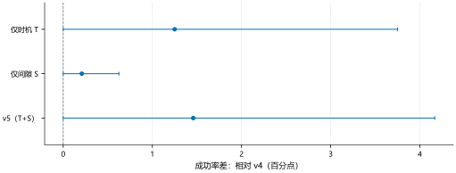
PNG · PDF · SVG · CSV
同60起点，20000次起点bootstrap、逐项95%区间。原预设执行混合v5−v4=+1.46[0,4.17]百分点：7次执行改善仅来自2个起点；三个训练种子固定。
区间未多重比较校正，包含零不能称显著普遍优势；无v5同批关闭恢复组。
测量来源与数据
reproduction/recovery_v5_20261012_01/analysis_confirmation/summary.json
3条导出值；来源SHA见PLOT_SOURCES.json。
F16 / 正文
独立几何分层压力测试
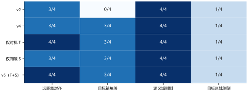
PNG · PDF · SVG · CSV
四个人工几何层，每层4起点，共16；5版本共80次执行。固定静止开爪提议、第80步强制恢复，400步上限；v5合计12/16。
小样本描述计数；不能合并原生确认，也不能称一般分布成功率。
测量来源与数据
reproduction/recovery_v5_20261012_01/analysis_geometry_confirmation/summary.json
20条导出值；来源SHA见PLOT_SOURCES.json。
F17 / 附录
已知开发案例的控制阶段时间线
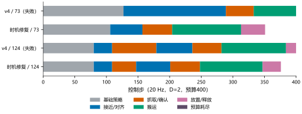
PNG · PDF · SVG · CSV
从既有机制回放记录提取；案例73与124已知，不是独立确认。阶段是离散类别，因此用时间条而非数字折线。成功轨迹在真实结束步停止。
只说明机制，不把单例效果推广至所有起点。
测量来源与数据
reproduction/recovery_v5_20261012_01/mechanism_physics.json
1527条导出值；来源SHA见PLOT_SOURCES.json。
F18a / 附录
既有四组效应：v2批次 / v2恢复
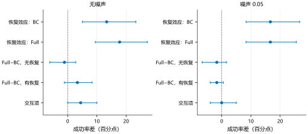
PNG · PDF · SVG · CSV
既有两批各60起点的事后分析；后两图共用v3批次。Full平均三个固定权重，按起点配对95%逐项区间。浮点负零规范显示为0，未改变数据。
不能拼成v5因果对照；不进行跨批次择优或宣称三次独立确认。
测量来源与数据
reproduction/consolidation_20261012_01/factorial_analysis.json
10条导出值；来源SHA见PLOT_SOURCES.json。
F18b / 附录
既有四组效应：v3批次 / v2恢复
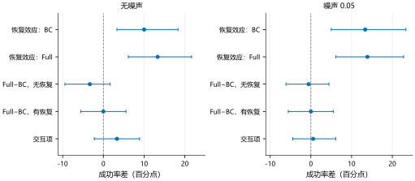
PNG · PDF · SVG · CSV
既有两批各60起点的事后分析；后两图共用v3批次。Full平均三个固定权重，按起点配对95%逐项区间。浮点负零规范显示为0，未改变数据。
不能拼成v5因果对照；不进行跨批次择优或宣称三次独立确认。
测量来源与数据
reproduction/consolidation_20261012_01/factorial_analysis.json
10条导出值；来源SHA见PLOT_SOURCES.json。
F18c / 附录
既有四组效应：v3批次 / v3恢复
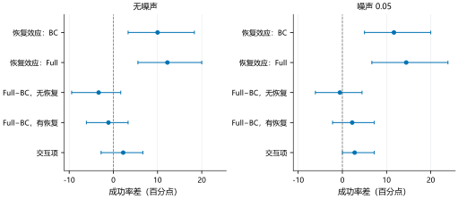
PNG · PDF · SVG · CSV
既有两批各60起点的事后分析；后两图共用v3批次。Full平均三个固定权重，按起点配对95%逐项区间。浮点负零规范显示为0，未改变数据。
不能拼成v5因果对照；不进行跨批次择优或宣称三次独立确认。
测量来源与数据
reproduction/consolidation_20261012_01/factorial_analysis.json
10条导出值；来源SHA见PLOT_SOURCES.json。
A03 / 附录
v6 开度与不可行处理消融
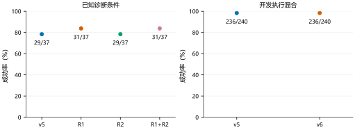
PNG · PDF · SVG · CSV
37个已知诊断条件的R1/R2消融；开发240次执行共享30起点，v5与v6均236/240，没有开发成功率改善。
测量来源与数据
reproduction/improvement_v6_20261015_01/analysis/dev_comparison.jsonreproduction/improvement_v6_20261015_01/analysis/pilot_b.json
6条导出值；来源SHA见PLOT_SOURCES.json。
A04 / 附录
恢复开度：观测与计划不一致
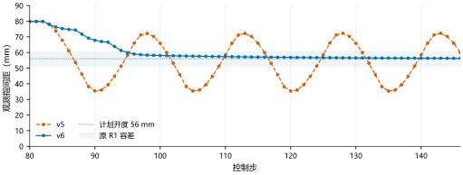
PNG · PDF · SVG · CSV
已知侧倒失抓案例11000013；采用原图state_before语义，每控制步一个原始观测，无平滑。
控制命令不等于实际开度，不能仅凭目标值判断抓取空间。
测量来源与数据
traces/v6_aperture_v5.jsontraces/v6_aperture_v6.json
134条导出值；来源SHA见PLOT_SOURCES.json。
A05 / 附录
无可行候选时的离散控制阶段
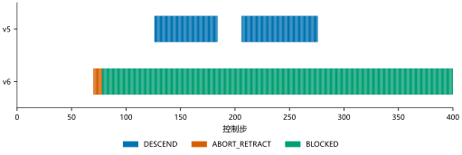
PNG · PDF · SVG · CSV
Full s23、无噪声、demo188：双方都未完成。新保护减少重复下降，但没有创造可行抓取。空白为其他控制阶段，CSV保留全部阶段。
测量来源与数据
traces/v6_infeasible_v5.jsontraces/v6_infeasible_v6.json
800条导出值；来源SHA见PLOT_SOURCES.json。
A06a / 附录
v10 箱沿已知案例：末端高度（m）/物体高度（m）
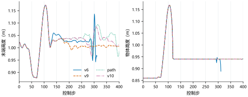
PNG · PDF · SVG · CSV
demo6000005，BC k=2、噪声0.05；同起点同噪声。逐步观测，不平滑；v6成功后在实际结束步停止。
轨迹复杂不是绘图插值；v6的完成来自BC接管，不应声称新恢复抓持。
测量来源与数据
reproduction/improvement_v10_20261015_01/analysis/wall_edge_trajectories.csv
3022条导出值；来源SHA见PLOT_SOURCES.json。
A06b / 附录
v10 箱沿已知案例：物体到目标XY距离（m）/物体轴倾角（°）
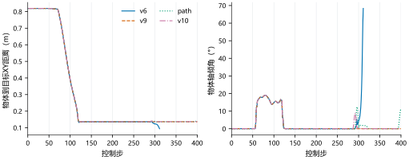
PNG · PDF · SVG · CSV
demo6000005，BC k=2、噪声0.05；同起点同噪声。逐步观测，不平滑；v6成功后在实际结束步停止。
轨迹复杂不是绘图插值；v6的完成来自BC接管，不应声称新恢复抓持。
测量来源与数据
reproduction/improvement_v10_20261015_01/analysis/wall_edge_trajectories.csv
3022条导出值；来源SHA见PLOT_SOURCES.json。
A07 / 附录
v11 开发集逐条件退步核对
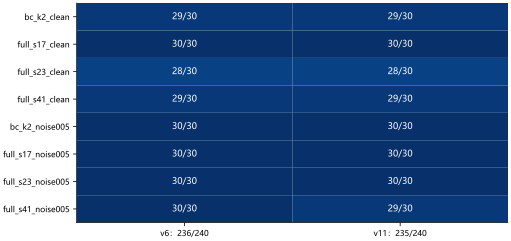
PNG · PDF · SVG · CSV
30个相同起点、8执行条件；Full s41噪声组少1次成功，v11未达到采用门槛，未独立确认。
不能用颜色差或240执行次数夸大独立样本量。
测量来源与数据
reproduction/improvement_v11_20261015_01/analysis/development.json
16条导出值；来源SHA见PLOT_SOURCES.json。
A08a / 附录
已知箱沿四组消融：末端世界高度（m）/物体世界高度（m）
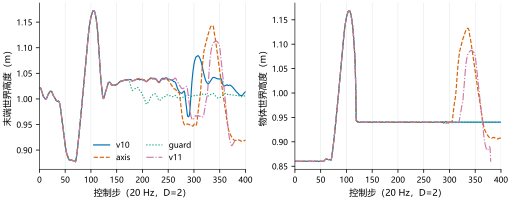
PNG · PDF · SVG · CSV
state_after原始每控制步数据，同起点验证通过，无平滑/补零/终点外推。BC k=2、噪声0.05、demo6000005；仅v11在380步完成。
真实控制阶段/观测波动保留。逐点CSV补全了旧v11退步图未导出的目标XY距离。
测量来源与数据
traces/v11_edge_axis.jsontraces/v11_edge_guard.jsontraces/v11_edge_v10.jsontraces/v11_edge_v11.json
3160条导出值；来源SHA见PLOT_SOURCES.json。
A08b / 附录
已知箱沿四组消融：物体到目标XY距离（m）/观测指间距（mm）
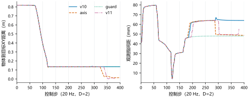
PNG · PDF · SVG · CSV
state_after原始每控制步数据，同起点验证通过，无平滑/补零/终点外推。BC k=2、噪声0.05、demo6000005；仅v11在380步完成。
真实控制阶段/观测波动保留。逐点CSV补全了旧v11退步图未导出的目标XY距离。
测量来源与数据
traces/v11_edge_axis.jsontraces/v11_edge_guard.jsontraces/v11_edge_v10.jsontraces/v11_edge_v11.json
3160条导出值；来源SHA见PLOT_SOURCES.json。
A09a / 附录
持物等待开发退步：末端世界高度（m）/物体世界高度（m）
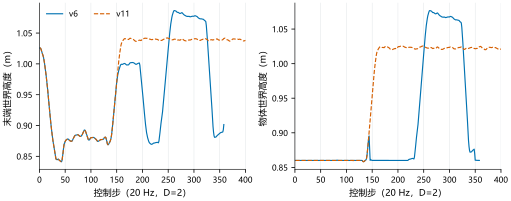
PNG · PDF · SVG · CSV
state_after原始每控制步数据，同起点验证通过，无平滑/补零/终点外推。Full s41、噪声0.05、demo87；v6在358步成功，v11在400步失败；新箱沿模块未触发。
真实控制阶段/观测波动保留。逐点CSV补全了旧v11退步图未导出的目标XY距离。
测量来源与数据
traces/v11_regression_v11.jsontraces/v11_regression_v6.json
1516条导出值；来源SHA见PLOT_SOURCES.json。
A09b / 附录
持物等待开发退步：物体到目标XY距离（m）/末端与物体距离（mm）
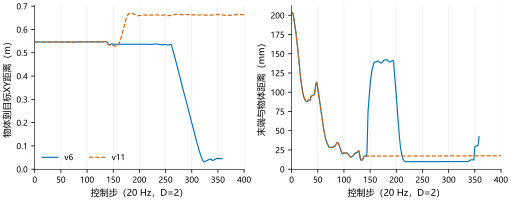
PNG · PDF · SVG · CSV
state_after原始每控制步数据，同起点验证通过，无平滑/补零/终点外推。Full s41、噪声0.05、demo87；v6在358步成功，v11在400步失败；新箱沿模块未触发。
真实控制阶段/观测波动保留。逐点CSV补全了旧v11退步图未导出的目标XY距离。
测量来源与数据
traces/v11_regression_v11.jsontraces/v11_regression_v6.json
1516条导出值；来源SHA见PLOT_SOURCES.json。